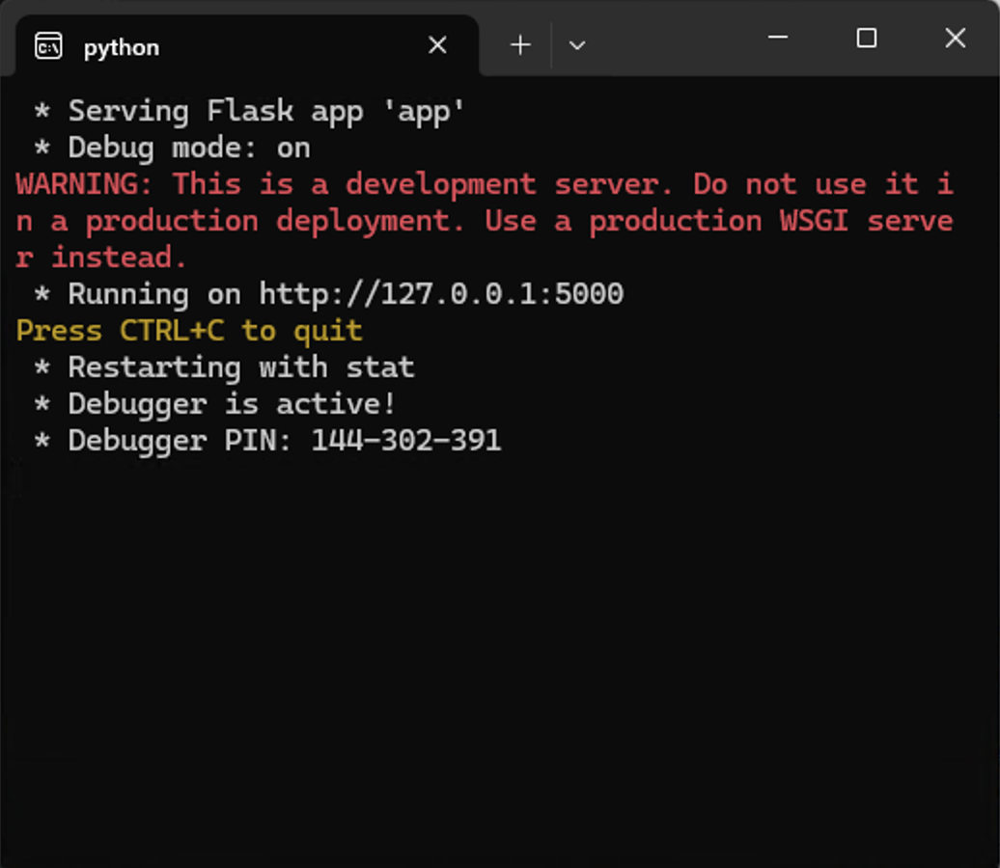
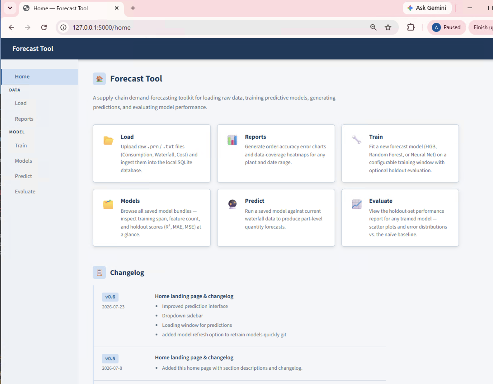

What Should Happen


Shortcut Errors
Error Nothing happens at all — no window, no browser
The shortcut itself is broken, or it's pointing at a .bat file that no
longer exists at that location.
- Right-click the shortcut → Properties, and check the Target field
points at the real
.batfile. - Browse to that folder directly and double-click the
.batfile itself. If that also does nothing, the file may have been moved, renamed, or deleted — reinstall or ask whoever set up the shortcut for a fresh copy.
Warning Windows shows a blue "protected your PC" screen
SmartScreen doesn't recognize the script yet. This is expected the first time a
new .bat file runs on a machine — it isn't a sign anything is broken.
- Click More info, then Run anyway.
- If that option is missing, your machine's security policy is blocking it — contact whoever manages your computer to allow the script.
Python Errors
The window opened, but closed on its own, or shows text you don't recognize. Because the shortcut launches Python directly (not through a Command Prompt), the window closes itself the instant Python stops — including when it crashes. If it closes too fast to read, see "How to actually read the error" below.
Error Window flashes open and closes immediately
Python hit an error and exited right away — you just couldn't read it before the window closed. This is the single most common startup complaint, and the message underneath is almost always one of the other entries in this section.
Jump to "How to actually read the error" to capture the real message, then match it against the entries below.
Error "'python' is not recognized as an internal or external command"
Windows can't find a Python installation on this computer's PATH — either Python isn't installed, or it was installed without the "Add to PATH" option checked.
- Open Command Prompt and run
python --version. If that also fails, install Python from python.org, making sure to check "Add python.exe to PATH" during setup. - If Python is installed but this still fails, it likely needs to be reinstalled with that box checked — unchecking it is the most common cause.
Error "The system cannot find the file specified" / "No such file or directory"
The path in the shortcut's .bat file doesn't match where the app actually lives
on this computer — commonly because the Windows username in the path (C:\Users\user\...)
was never updated to match the real account, or the project folder was moved.
- Find the app's actual folder (search for
app.pyif unsure). - Right-click the
.batfile → Edit (opens in Notepad), and correct the path on thestart "" python "..."line to match exactly, then save.
Error "ModuleNotFoundError: No module named 'flask'" (or pandas, sklearn, etc.)
Python itself started, but the packages the app depends on aren't installed for that Python — common if there are multiple Pythons on the machine (e.g. one from the Microsoft Store and one from python.org) and the shortcut is reaching a different one than expected.
Open Command Prompt in the app's project folder and run:
pip install -r requirements.txt
If it still can't find the packages after that, run where python to see which
installation is being used, and confirm it's the same one the install command ran against.
Error "OSError: [WinError 10048] ... address already in use"
Something is already using port 5000 — almost always a Forecast Tool instance from an earlier launch that's still running quietly in the background. Closing the browser tab does not stop the app; only closing (or Ctrl+C'ing) the black window does.
- Open Task Manager → look for a
python.exeprocess (there may be two — the app starts a helper process alongside itself) and End Task on it/them. - Re-run the shortcut.
- Going forward, close the black window when you're done using the tool, rather than just closing the browser tab.
Browser Errors
The black window is still open, but the browser tab isn't showing the app.
Error "This site can't be reached" / "127.0.0.1 refused to connect"
The browser opened right on schedule — 3 seconds after launch — but the app wasn't quite ready to answer yet. On a slower computer, or the first run after a restart, loading the app's data and models can take longer than 3 seconds.
- Check the black window: if it's still open and not showing an error, the app is likely fine and just needs a few more seconds.
- Wait 10-15 seconds, then reload the browser tab (F5) or revisit
http://127.0.0.1:5000manually. - If you are still getting the same error, try typing
http://127.0.0.1:5000into an incognito browser.
Warning A Windows Firewall pop-up appears
Windows is asking permission for Python to communicate on the network — this happens the first time the app runs on a machine, since it needs to serve the page to your browser.
Click Allow access (Private networks is sufficient). If you click Cancel or the pop-up times out, the browser tab will fail to load and the fix above won't help — relaunch the shortcut so the pop-up appears again.
Warning Every launch opens a new browser tab, even though it was already open
Harmless, but a sign the app was already running from an earlier launch that never got closed — the shortcut doesn't check for that before starting a new browser tab.
Not urgent, but if it happens repeatedly, check Task Manager for leftover
python.exe processes as described above, and close the black window instead of
just the browser tab when you're finished for the day.
How to Actually Read the Error
Since the black window can close itself before you can read it, run the same command from a window that stays open:
- Open the Start Menu, type
cmd, and press Enter to open Command Prompt. - Type
cdfollowed by a space, then drag the app's project folder into the window (this fills in the path), and press Enter. - Run:
python app\ui\app.py
- Whatever error appears will stay on screen — that's the exact message to match against the list above, or to share if you're asking someone else for help.
Running on http://127.0.0.1:5000), open a browser and go to that
address manually — you're back up and running even without the shortcut.